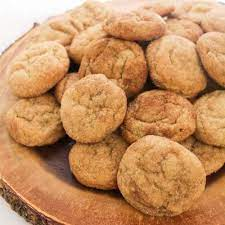

Apple Butter Snickerdoodles

These Snickerdoodle cookies have a hint of apple butter for a different take on the classic favorite.
In just 2 hours and 45 minutes we will guide you on how to make your very own delicious apple butter snickerdoodles.
With just 12 ingredients and 5 steps, this is a snack that can be easily made and enjoyed.
Ingredients
- 2 3/4 cups all-purpose flour
- 1/2 teaspoon cream of tartar
- 1/2 teaspoon baking soda
- 1/2 teaspoon salt
- 1/4 teaspoon ground cinnamon
- 1/4 teaspoon ground nutmeg
- 1 3/4 cups white sugar, divided
- 1/2 cups unsalted butter, softened
- 1 large egg, at room temperature
- 1/2 teaspoon vanilla extract
- 3/4 cup apple butter
- 2 tablespoons ground cinnamon
Steps
- Whisk flour, cream of tartar, baking soda, salt, 1/4 teaspoon cinnamon, and nutmeg in a medium bowl until combined
- Mix together butter and 1 1/2 cups sugar in a large bowl until thoroughly combined. Stir in egg and vanilla until incororated. Add apple
butter and mix until combined. Pour 1/2 of the dry ingredients and mix until combined. Add remaining dry ingredients and mix just until
no dry clumps of flour remain. Cover bowl and refrigerate for at least 2 hours, or up to 24 hours.
- Preheat oven to 375 degrees F. Line 2 baking sheets with parchment paper.
- Mix together remaining sugar and 2 tablespoons cinnamon. Drop tablespoon sized pieces of dough into the cinnamon-sugar
micture and roll into balls.
- Bake in the oven until edges are set or about 10 minutes.